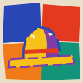

peindre un chapeau
戴一頂野色
- 挑一支顏料管，再點畫上的一塊（或下面的格子）——那塊就被一筆一筆刷成那個顏色。
- 相鄰的兩塊越是對面的顏色、臉上的影子越不像影子，評審越滿意。
- 按「交給評審」看他怎麼說；帽冠與帽簷的顏色會直接開成一張染帽單。
游標在畫上移動＝移動光源；影子是亮面顏色的對面，不是黑。

野色帽仔間Iá-sik Bō-á-king · Tāi-kah, depuis 1923peindre un chapeau
游標在畫上移動＝移動光源；影子是亮面顏色的對面，不是黑。